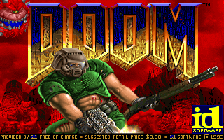
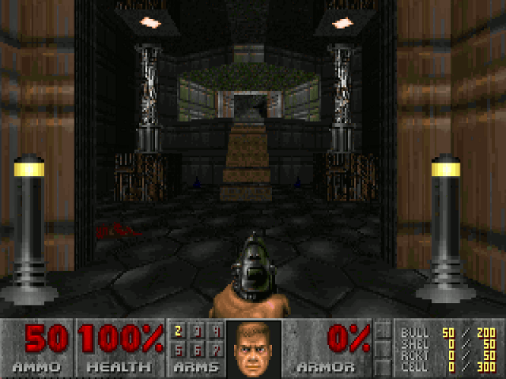

Mission 00 / Homemade wine🍷
ObjectifDOOM
Faire tourner un jeu Windows sous Linux.
Comprendre ce qui le rend possible.
Construire les pièces manquantes.
À l’origine / Un projet personnel
D’où vient ce projet ?
L’essor de Wine et Proton m’a donné envie de regarder comment un programme Windows pouvait tourner sous Linux.
L’inspiration
Wine
Wine Is Not an Emulator : une couche de compatibilité avec Windows.
Le déclic côté jeux
Proton
L’outil de Valve combine Wine et des composants pour jouer sous Linux.
Mon terrain d’exploration
my_wine
Couche de compatibilité Windows minimaliste et monolitique.
Une cible concrète pour guider l’apprentissage : DOOM95.
Hypothèse / Même famille de processeurs
Les instructions savent déjà tourner.
Sur un processeur x86 compatible, le code machine x86 s’exécute directement.
Le processeur comprend
mov eax, 42 add eax, 1
Charger une valeur.
Ajouter un nombre.
L’assembleur donne des noms lisibles aux instructions machine.
Ce qu’il nous reste à construire
Le pont à construire concerne les attentes du programme.
Inventaire / Ce que vous savez déjà
ld.so nous a donné la méthode.
Du fichier sur disque à la première instruction : cinq opérations, de gauche à droite.
01 / Le fichier
Lire
Repérer le code, les données et les informations de chargement.
02 / La mémoire
Mapper
Rendre le code et les données accessibles dans la mémoire du processus.
03 / Les pointeurs
Relocaliser
Corriger les pointeurs concernés si l’image change d’adresse.
04 / Les fonctions
Résoudre
Trouver l’adresse des fonctions demandées par le programme.
05 / Le démarrage
Exécuter
Transférer le contrôle au point d’entrée du programme.
Exemple de résolution : le programme demande puts → le chargeur trouve la fonction → il branche son adresse.
Pour DOOM, charger le fichier ne suffit pas : il faut aussi fournir l’environnement Windows attendu.
Mapper / Le fichier ne fournit pas tout
Ce qu’il faut mettre en mémoire pour DOOM.
Sur disque
DOOM95.EXE
Des instructions,
des données,
une recette de chargement.
Mémoire du processus / À charger selon le fichier
À créer pour l’exécution
Commençons par le code et les données : où le fichier indique-t-il comment les charger ?
Lire / Une nouvelle carte
Portable Executable (PE)
La recette de l’image Windows. DOOM95 utilise la variante 32 bits : PE32.
Dans le fichier
| Dans ELF | Dans PE |
|---|---|
| Segments à charger | Sections à placer |
| Symboles à résoudre | Fonctions à importer |
| Relocations | Corrections de base |
Une analogie de rôle, pas des structures identiques.
Nous savons déjà quoi chercher : où placer, quoi corriger, où commencer.
Mapper et relocaliser / Du fichier aux adresses
Construire une image cohérente.
Relative Virtual Address (RVA) : déplacement par rapport au début de l’image en mémoire.
0x00500000 + 0x00002000
= 0x00502000Adresses d’exemple ; le préfixe 0x indique la base 16.
base réellebase + RVASi la base passe de 0x00400000 à 0x00500000, la correction vaut +0x00100000 pour les pointeurs désignés par les relocations de base.
Un emplacement dans le fichier et une adresse dans le processus sont deux coordonnées différentes.
Résoudre / Une demande devient une adresse
Brancher les fonctions manquantes.
Dynamic-Link Library (DLL) : bibliothèque liée dynamiquement. Ici, kernel32.dll expose des fonctions Windows.
1 / Demande
kernel32.dll
WriteFile
Import Lookup Table (ILT)
La liste des fonctions attendues.
2 / Résolution
Trouver une implémentation
Une fonction interne ou l’export d’une bibliothèque chargée.
3 / Adresse branchée
Un pointeur appelable
Import Address Table (IAT)
La table utilisée par le programme.
Comme pour puts avec ld.so, un nom devient une adresse. Un handler est la fonction qui traite la demande.
L’IAT reçoit une adresse : fonction interne ou fonction d’une DLL chargée.
Résolution / Fonctions internes et DLL chargées
Où trouve-t-on les fonctions des DLL ?
Avec ld.so, puts venait de libc.so. Pour simplifier, nos fonctions Windows sont intégrées à my_wine.
Fonction réimplémentée dans my_wine
Pas de DLL système à charger.
kernel32.dll!WriteFile
→ adresse de notre fonction C.
Une table interne associe le nom de DLL et de fonction à cette adresse.
Fonction exportée par une DLL du programme
Charger le fichier DLL.
Mapper ses sections, relocaliser et résoudre ses propres dépendances.
La table des exports donne l’adresse de la fonction dans la DLL chargée.
Fonction interne ou export d’une DLL : l’IAT reçoit une adresse.
Nouveau niveau / Le premier saut
L’image est prête. Le programme aussi ?
Charger le fichier ne prépare pas tout ce que le programme attend.
Déjà prêt / Le chargement
Les instructions en mémoire
Le code du jeu est chargé.
Les adresses corrigées
Les pointeurs visent les bons emplacements.
Le point d’entrée connu
Nous savons où commencer.
Encore à préparer / L’exécution
Une Stack valide
Pour appeler une fonction et revenir.
L’état Windows du programme
Pour décrire le thread et le processus.
Les bonnes règles d’appel
Pour transmettre arguments et résultats.
Le saut transmet le contrôle. Il ne fabrique pas l’environnement.
Point de repère / Registres x86 · 32 bits
Les cases de travail du processeur.
Ici, le code est en 32 bits. Avec __cdecl et __stdcall, les arguments passent par la Stack.
EAXValeur de travail ou résultat d’un appel.
EIPL’adresse de l’instruction à exécuter.
ESPL’adresse du sommet de la Stack.
Lecture d’une instruction · x86, 32 bits
mov eax, [esp]1. Lire l’adresse contenue dans ESP.
2. Lire les 4 octets en mémoire à cette adresse.
3. Placer cette valeur dans EAX.
Les crochets signifient « accéder à la mémoire ».
Un registre peut contenir une adresse. La donnée pointée reste en mémoire.
Comprendre les règles d’appel / x86 32 bits
Après le retour, l’argument reste.
__cdecl / __stdcall en 32 bits : les arguments passent par la Stack.
1. Un argument empilé
0x1000…0x0FFC42 ← ESP0x0FF8librepush 42
Le sommet pointe sur l’argument.
2. L’appel
0x1000…0x0FFC420x0FF8adresse de retour ← ESPcall fonction
Empile l’adresse de retour, puis entre dans la fonction.
3. Le retour
0x1000…0x0FFC42 ← ESP0x0FF8libéréeret sans opérande
Dépile l’adresse de retour. L’argument reste sur la Stack.
L’argument est encore là. Qui doit le retirer ?
Réimplémenter une fonction Windows / x86 32 bits
Même fonction, même convention d’appel.
Qui retire les arguments ? stdcall : la fonction appelée. cdecl : l’appelant.
__attribute__((stdcall))int WriteFile(/* 5 arguments */){ /* … résolution du handle … */ long res = INLINE_SYSCALL_WRITE( fd, lpBuffer, nNumberOfBytesToWrite); /* … erreur et octets écrits … */ return 1;}Fonction Windows d’origine
WriteFile utilise stdcall.
Elle retire ses arguments de la Stack.
Notre réimplémentation
On conserve stdcall.
L’attribut indique la convention au compilateur.
Il génère le nettoyage.
On remplace la fonction Windows : on doit conserver sa convention d’appel.
Préparer l’environnement / Windows x86 32 bits
Le programme lit aussi son environnement en mémoire.
Le code Windows peut lire les informations du thread et du processus sans appeler de fonction.
Registre de segment FS
Base du segment
En 32 bits, elle conduit à l’état Windows du thread.
Thread Environment Block (TEB)
État du thread
Identifiants du thread et du processus.
Pointeur vers le PEB.
Process Environment Block (PEB)
État du processus
Adresse de l’exécutable.
Pointeurs vers la Heap et les paramètres de lancement.
my_wine doit créer ces structures et configurer FS avant de lancer le programme.
PEB et TEB / Une overview simplifiée
Zoom sur le PEB et le TEB
struct PEB { void *ImageBaseAddress; // image chargée void *ProcessHeap; // heap du processus struct RTL_USER_PROCESS_PARAMETERS *ProcessParameters; // paramètres de lancement}; struct TEB { void *ExceptionList; // gestionnaires d’exceptions struct TEB *Self; // adresse de ce TEB char **EnvironmentPointer; // tableau "CLÉ=valeur" struct PEB *ProcessEnvironmentBlock;};#include <stdint.h>struct UNICODE_STRING { uint16_t Length; // octets de texte uint16_t MaximumLength; // taille du tampon uint16_t *Buffer; // texte UTF-16}; struct RTL_USER_PROCESS_PARAMETERS { struct UNICODE_STRING CommandLine;}; // « DOOM95.EXE » : 10 caractères// Length = 20 ; MaximumLength = 22 (avec zéro)Pointeurs sur 32 bits. Longueurs de chaîne en octets, caractères UTF-16.
Traduire / Suivre un appel à WriteFile
De WriteFile sous Windows à write sous Linux.
L’appel du programme arrive dans notre réimplémentation de WriteFile.
Programme Windows
Appelle WriteFile
Fournit le handle du fichier, les octets à écrire et leur nombre.
Notre fonction dans my_wine
Retrouve le fichier Linux
Convertit le handle Windows en descripteur de fichier Linux (fd).
Appel système Linux
Exécute write
Le noyau reçoit le descripteur, le tampon et la taille, puis effectue l’écriture.
← Notre WriteFile répond : succès ou échec, et nombre d’octets écrits via le pointeur fourni.
Le programme appelle une fonction Windows. Notre code effectue l’écriture via Linux.
Intégration / Un choix de my_wine · 32 bits
Deux Stacks: une Linux et une Windows.
Le jeu doit retrouver ses appels en cours après chaque passage dans une bibliothèque Linux.
Stack du jeu
Exécuter le code Windows
mmap réserve la zone. On y prépare les arguments et l’adresse du code qui terminera le processus si le point d’entrée retourne.
ESP pointe sur cette adresse au lancement. Les appels du jeu utilisent ensuite cette Stack.
Stack pour les appels Linux
Réutiliser les bibliothèques Linux
SDL2 gère notamment l’affichage ; la libc fournit des fonctions comme malloc et getenv.
my_wine prévoit une autre Stack pour ces appels. Celle du jeu reste en place pendant leur exécution.
Même processus, deux zones mémoire : changer de Stack ne copie pas son contenu.
Intégration / Deux chemins dans my_wine · 32 bits
Garder la Stack ou appeler une bibliothèque ?
Notre WriteFile → noyau Linux
Garder la Stack du jeu
Notre fonction C reçoit les arguments avec la convention Windows, puis effectue l’appel système write directement.
Pas de passage par la fonction write de la libc. Ce chemin ne change pas de Stack utilisateur.
Notre code SDL2 → SDL2 / libc
Utiliser la Stack Linux préparée
1. Sauvegarder ESP et le contexte Windows.
2. Passer sur la Stack Linux et appeler la bibliothèque.
3. Restaurer le contexte et ESP pour reprendre le jeu.
Cela permet de réutiliser SDL2 et, dans ce chemin, malloc, free ou getenv de la libc.
Pour appeler une bibliothèque, il faut aussi respecter sa convention d’appel et son contexte de thread.
Intégration / La réponse aux besoins du jeu
Le relais multimédia côté Linux.
Simple DirectMedia Layer, version 2 (SDL2) : la bibliothèque choisie pour afficher, recevoir les entrées et jouer l’audio.
La musique suit un chemin distinct : les services multimédias Windows, via winmm.dll, utilisent notamment le synthétiseur FluidSynth.
Image, entrées, audio : voilà ce que la démonstration doit maintenant vérifier.
Exécution / À vous de jouer
Le moment de vérité.


Conclusion / Ce que fait my_wine
Faire tournerDOOMsous Linux.
Charger les sections, les DLL et les imports.
Préparer la Stack, le TEB et le PEB.
Réimplémenter les fonctions Windows
avec le noyau et les bibliothèques Linux.
Le processeur exécute le code du jeu ; my_wine réimplémente les fonctions Windows qu’il appelle.
Réserve / Deux architectures, une méthode
Qu’est-ce qui change en 64 bits ?
| Aspect | 32 bits · parcours principal | 64 bits · comparaison |
|---|---|---|
| Exécutable Linux | my_wine32 | my_wine64 |
| Image Windows | PE32 | PE32+ |
| Stack / retour | ESP / EAX | RSP / RAX |
| État du thread Windows | Base du segment FS | Base du segment GS |
| Arguments usuels | Stack pour __stdcall | Microsoft x64 : RCX, RDX, R8, R9 |
Le lanceur lit le format puis choisit un vrai processus de la bonne largeur.
Réserve / Le chemin HeapAlloc dans my_wine · 32 bits
Comment le jeu alloue-t-il sa mémoire ?
void *heap = GetProcessHeap(); void *ptr = HeapAlloc(heap, 0, 100); // demander 100 octets
GetProcessHeap
Retrouver la Heap
Renvoie l’objet de gestion aussi référencé par PEB.ProcessHeap.
Notre HeapAlloc
Traiter la demande
Vérifie la Heap, puis demande un bloc à notre allocateur 32 bits.
Appel système mmap
Obtenir la mémoire
Réserve une zone en lecture/écriture. Garde la taille dans un en-tête de 4 octets ; renvoie l’adresse juste après.
HeapFree(heap, 0, ptr) retrouve l’en-tête et appelle munmap.
Choix simple en 32 bits : une zone mémoire distincte par allocation.